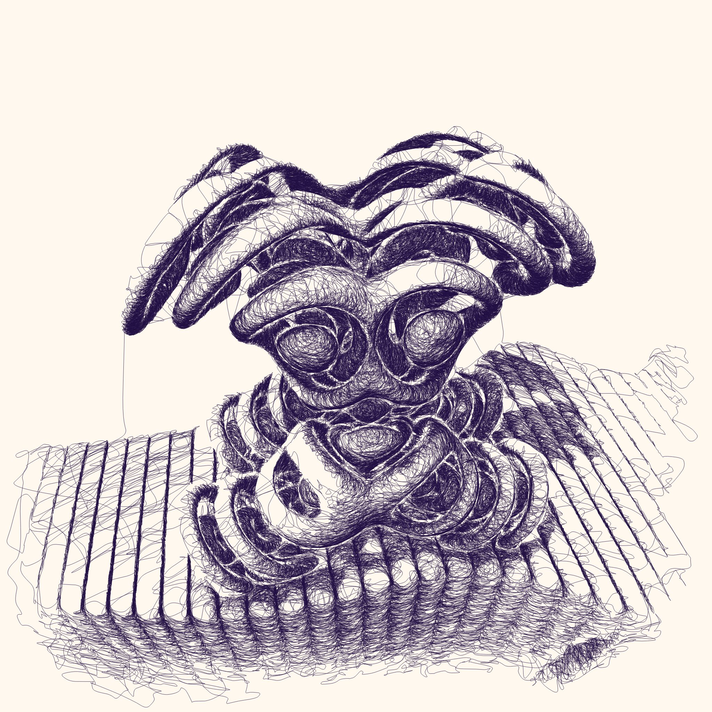
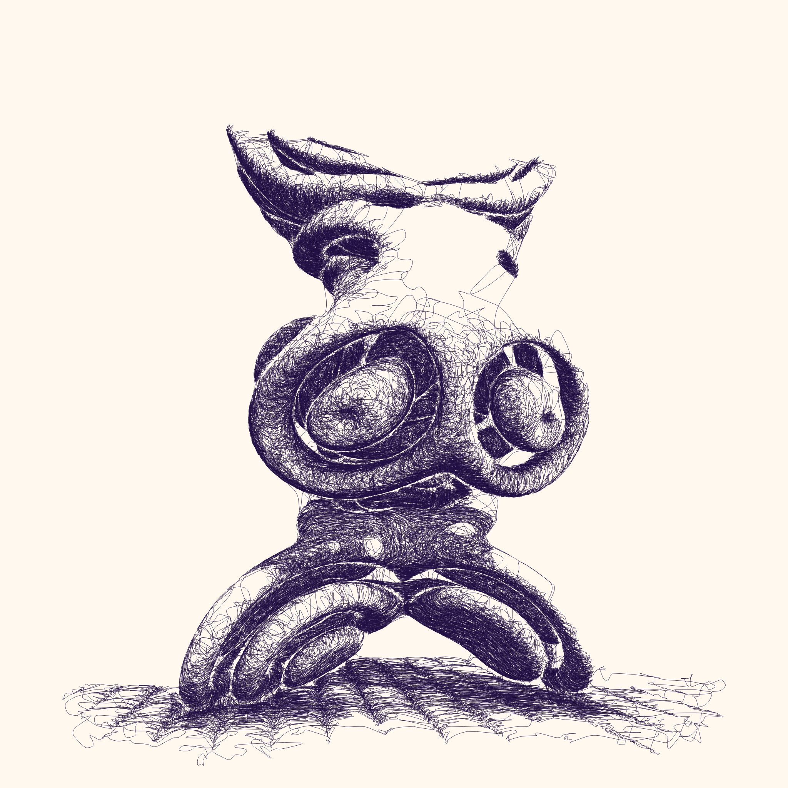
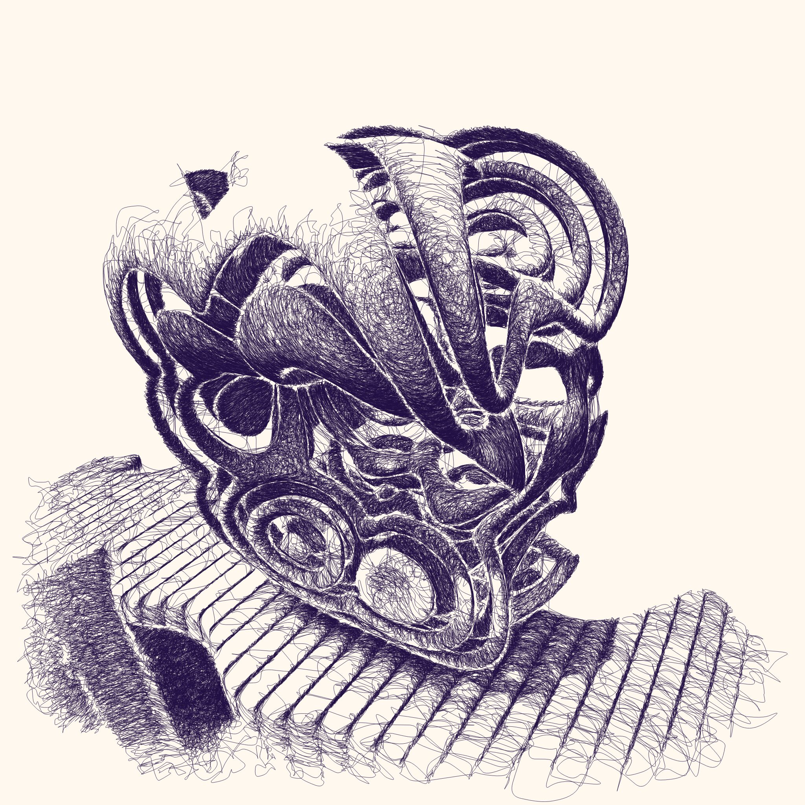
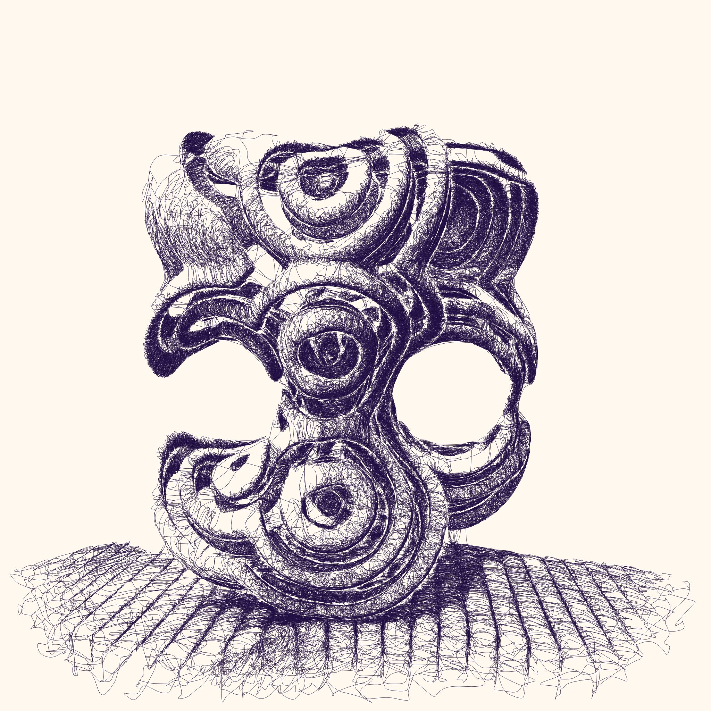
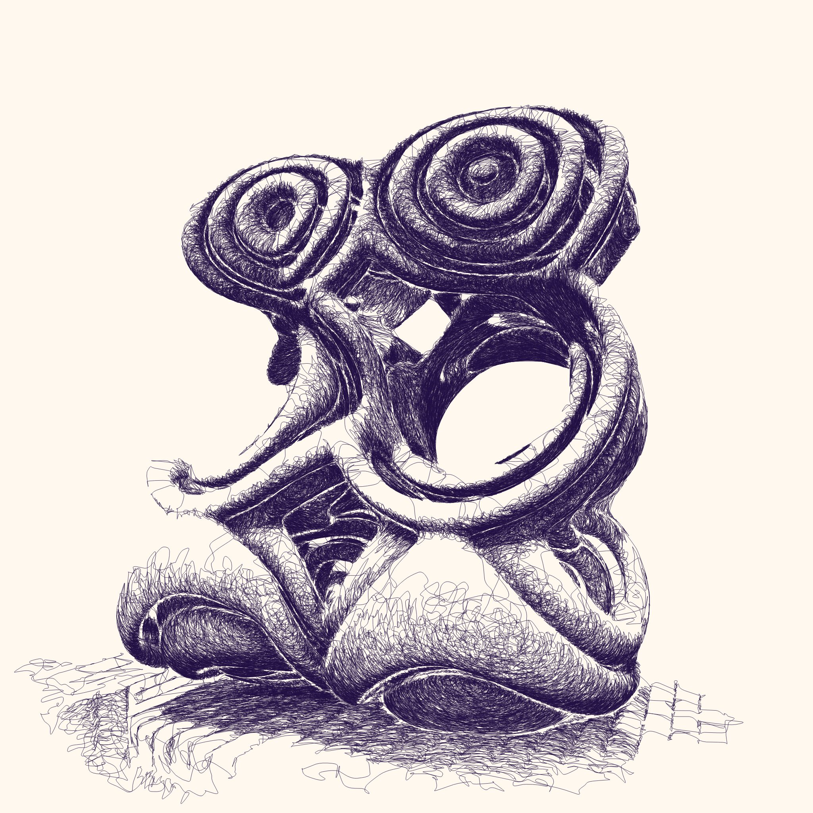
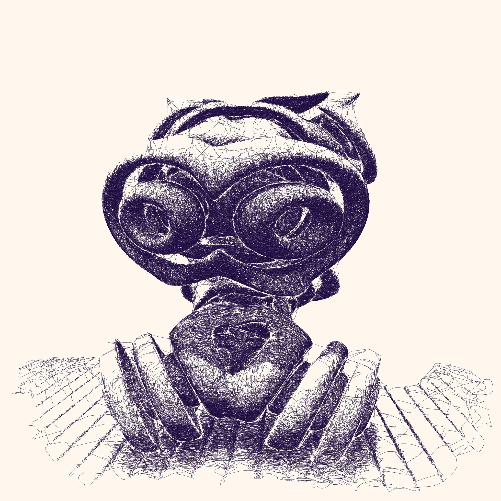

Part of the digital section of Cure³ 2025 at Bonhams London, curated by Alex Estorick and Foteini Valeonti of reGEN, Impossible Sentinels is a product of my continued exploration of the duality of code and data.
The project consists of one beautiful physical plot that will be auctioned at Bonhams, and a 50 edition, digital on-chain (ETH mainnet) project on FX(hash).
Only 4750 characters of code fully define this series of 50 unique curated digital artworks. Some pictures are worth a thousand words, these are 95 characters. Information so powerful, you actually need less.
The project is a milestone in my ongoing journey describing three dimensional scenes with computer code and mathematics. Unlike traditional photo-realistic CGI as seen in movies, these algorithms output line art suitable for plotter/robot drawing. After my "rayhatching" projects, such as Industrial Devolution and Universal Rayhatcher, for Impossible Sentinels I've developed a single line scribbling algorithm. You can read more about my explorations in non photo-realistic rendering techniques in the article Rayhatching Evolution.
Why does it matter that it's only 4750 characters of code? Well look at it, that is a screenshot of the entire code up there. Then consider these 50 intricate line drawings. They are not just any 50 drawings, at initialization that code runs tens or hundreds of random configurations of scenes before accepting one based on stringent selection criteria. But that is not all, I personally ran that procedure to generate over 500 images and carefully curated the top 50 best, most interesting, iconic outputs among them. Then I encoded the parameters (as random seeds) of this very special selection into those 4750 characters.
Everything is self-contained. Less than half a page of characters fully generates, and thus in some sense is equivalent to, these 50 beautifully detailed line drawings. This is something incredible that I can sometimes barely fathom myself, working on a project like this for over half a year and in the final stage of minimization to see the code diminish like that. At some point the code fits entirely on the screen and I can't help but wonder, how did all those hours disappear into such a small amount of symbols? It feels magical and like it doesn't make sense, except for every step along the way and the fact that it, it actually still works.
50 unique evocative objects -- Are they alive? Technological? A souvenir from your dream last night? Three croissants in a trenchcoat? Existential video game controllers? Cubist trilobites? Baby Cthulhu's chew toys? Actually made of socks? Polynomial bones?
And what about the mysterious left over organ bits when you put together a human again on the other side of a teleporter?
If you've read this far, we can get into some technical details. Did I mention that everything is self-contained? Well if you right-click save one of these images, you'll find they are SVG files. This is an image format specially suitable for plotter/robot drawing. However they are also text files you can open in a text editor, if you do so, you will find near the top of this file a piece of code. It's almost the same code as the screenshot above, hard-coded to generate that one particular image. Because this is code art, and this way, you can't have the image without also posessing the code.
And what even are these shapes? And why do they remind of some of the outputs of my other project Skulptuur? The shapes are based on fun and interesting things you can do with SDFs, Signed Distance Functions, the mathematical formulas that I use to define and render my 3D scenes.
One thing you can do with a shape SDF, maybe a sphere, you can take the surface of that shape and give it a thickness. This gives you a hollow sphere. You can repeat this operation, now both the inner and outer surfaces of this hollow sphere get a thickness, giving you a sphere with a double shell.
Another interesting thing you can do is take intersections of two shapes. Imagine two spheres, ghostly passing halfway through each other, the region in the middle where they both exist, has a "lens" shape, if you can imagine this. That region is the intersection of two spheres. An interesting property of the intersection is that it is often a more complex, unexpected shape, than the shapes it was made from.
The shapes of Skulptuur are based on the intersection of two grids of various shapes with zero, one or double shells. The shapes of Impossible Sentinels are defined somewhat similar. They are formed of the intersection of a stack (2x3x2) of spheres and a set of two toruses/donuts. Both get double-shelled and the shapes can be rotated in any orientation. The intersection operation is slightly different, instead of intersecting the volumes of shapes, it intersects purely the surfaces of these (double-shelled) shapes, resulting in a set of lines on their shared surfaces. These lines are then inflated, given a thickness. This alternate intersection operation causes everything to look more rounded and organic than the shapes of Skulptuur.
This may all be a bit hard to imagine, but if you look at the output images on the left, you should be able to recognize some donuts/toruses intersected by a stack of spheres, for instance in image#13.

1
2
3
4

5

6

7

8
9
10
11

12
13

14

15

16
17
18

19

20
21
22

23
24
25

26

27

28
29

30

31

32

33

34
35

36
37
38
39

40

41

42
43
44
45

46
47

48
49

50